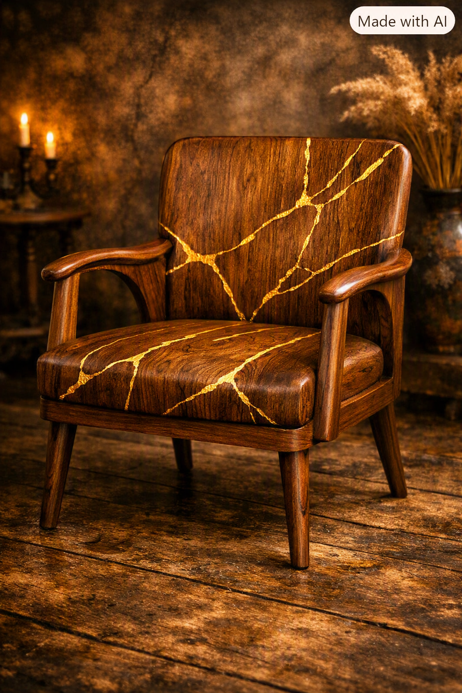
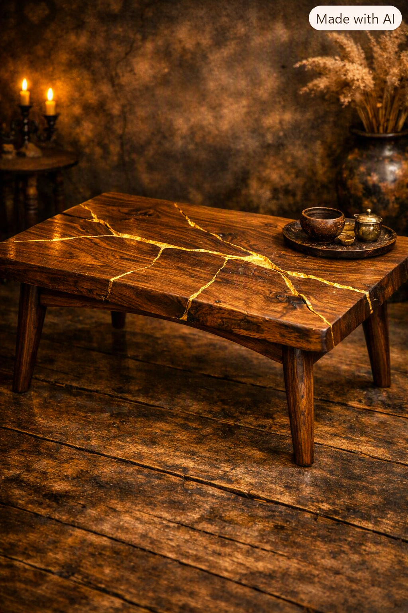
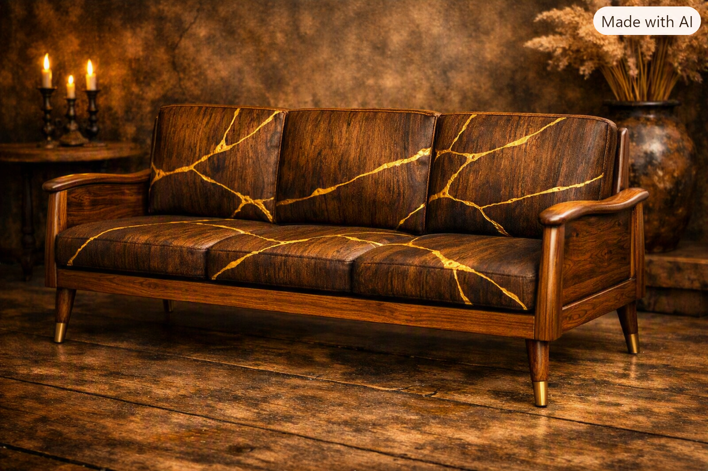

Under the expert supervision of by Maryam Saeed, by Maryam Saeed — NHS University Certified Interior Design Expert, Kintsugi presents heart‑throbbing interior design concepts inspired by the art of Kintsugi — where broken becomes beautiful, and every crack tells a story of resilience and elegance.
Celebrating the beauty of broken things repaired with gold.

Elegant cracks filled with gold.

Wood repaired with golden veins.

Modern velvet with gold accents.